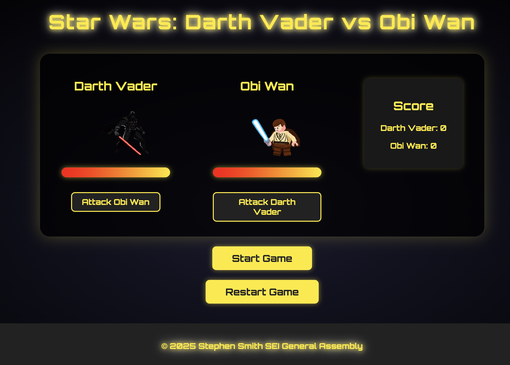
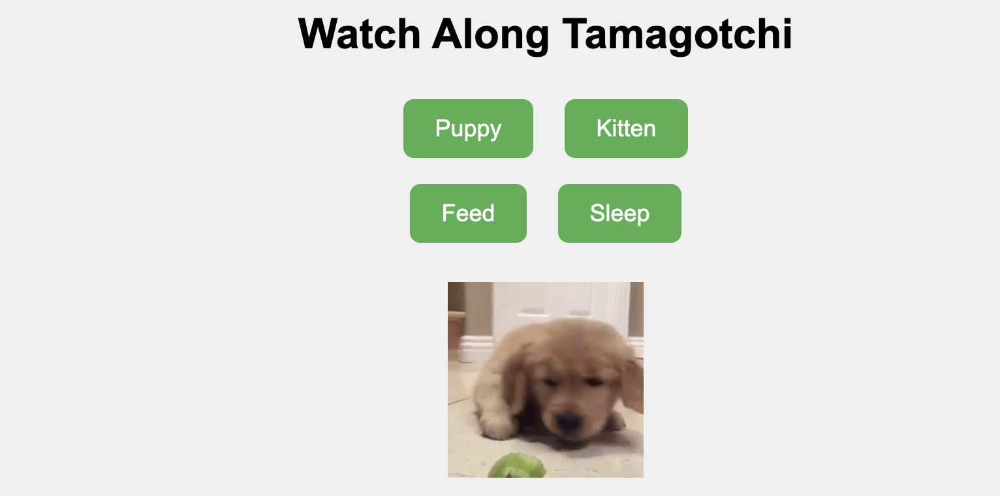
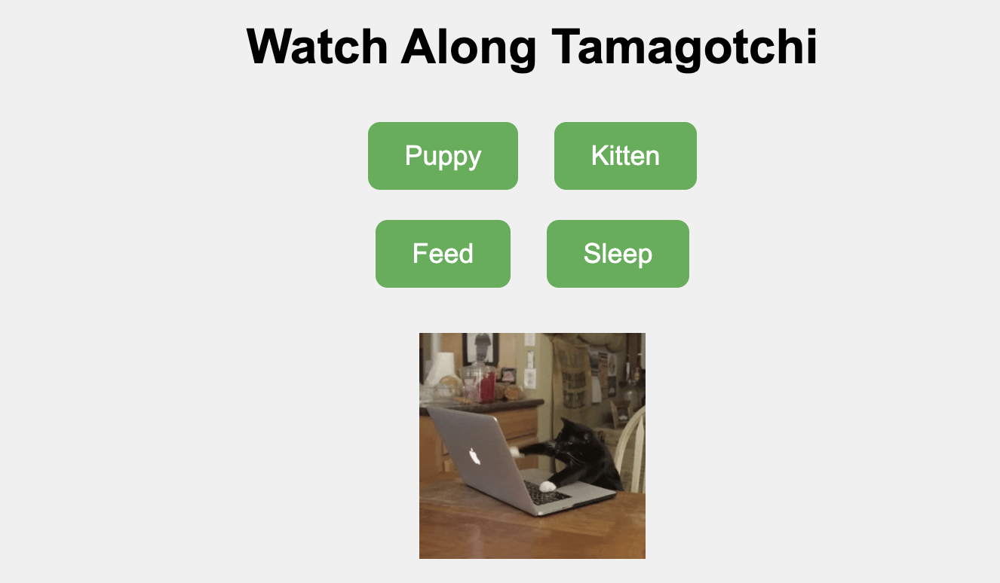
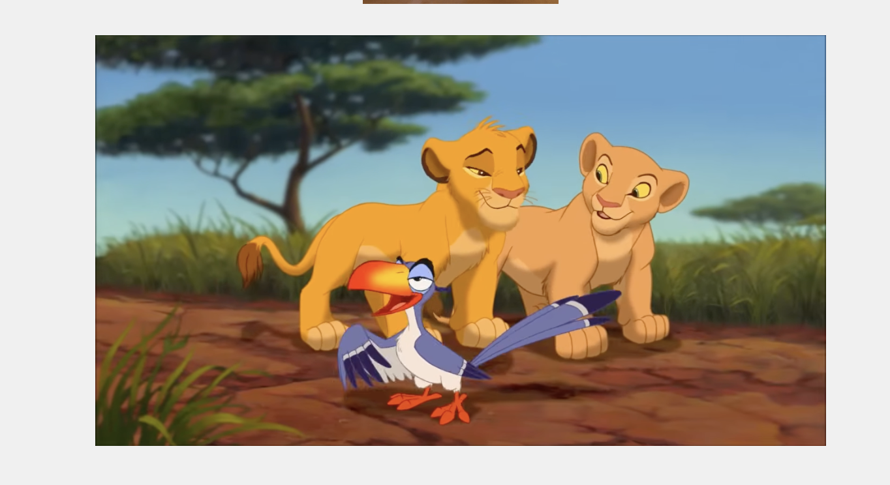
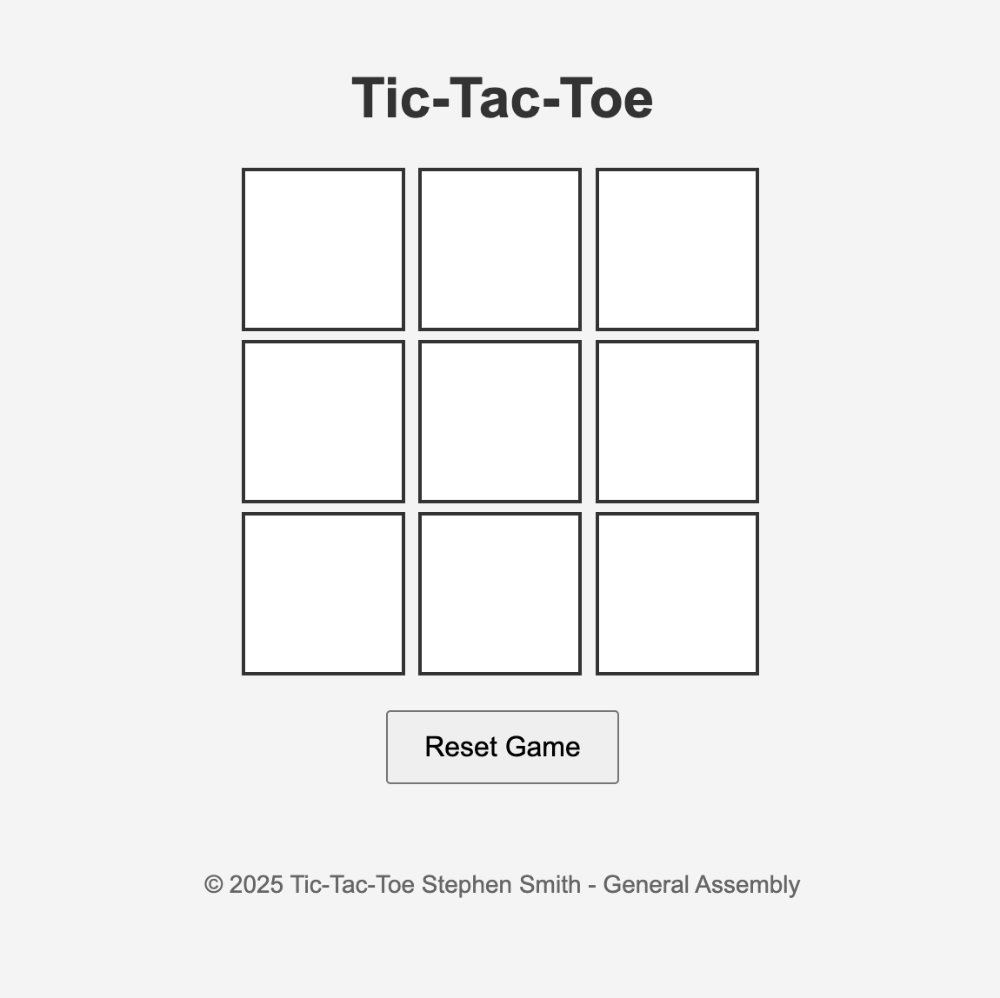

Stephen D. Smith's Portfolio
General Assembly: Software Engineering
Projects
Star Wars: Darth Vader vs Obi Wan
In this game, two Star Wars characters face off in a battle where each attack is random. Players can press "Start" to begin the fight, and the characters take turns attacking each other. The attacks are randomized, adding an element of unpredictability to the gameplay. The first character to reduce the opponent's health bar to zero or below wins the battle. This project showcases my ability to implement game mechanics, randomization, and event handling using JavaScript, along with basic game logic to create an engaging and interactive user experience. Tools Used: CSS for styling the game interface Vanilla JavaScript for handling the game logic and interaction HTML for the structure of the webpage Deployed using Git and GitHub for version control and hosting.


Link to Star Wars Game
Link to Github
Watch Along Tamagotchi
In this fun and interactive Tamagotchi game, you can choose between a puppy or a kitten as your virtual pet. The game lets you feed your pet or have them sleep, while you watch "The Lion King’s" iconic song "I Just Can’t Wait to Be King." The combination of caring for your pet and enjoying the music creates a playful and engaging experience. Features: Choose between a puppy or kitten to care for. Feed or let your pet sleep to keep them happy and healthy. Enjoy the nostalgic fun of watching "I Just Can’t Wait to Be King" while playing. Tools Used: CSS for styling the game interface and pet. Vanilla JavaScript for managing pet actions, game logic, and interactions. HTML for structuring the layout of the game. Deployed using Git and GitHub for version control and hosting.
  
Tamagotchi Game
Github Link
Tic Tac Toe
This project is a classic two-player Tic-Tac-Toe game where users can play against each other on the same device. The game features a responsive 3x3 grid, real-time turn tracking, and win detection. Players can reset the game at any time to start a new round. The project demonstrates my ability to implement game logic, manage state, and create an intuitive user interface using JavaScript, HTML, and CSS. Tools Used: CSS for styling the game board and interface. Vanilla JavaScript for handling game logic, including turn-taking, win detection, and game reset functionality. HTML for structuring the layout of the game. Deployed using Git and GitHub for version control and hosting.
